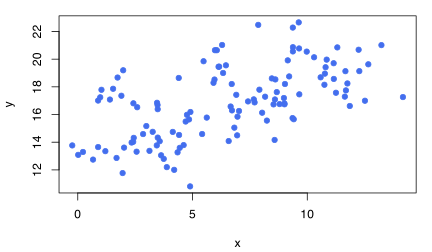
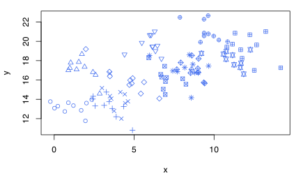
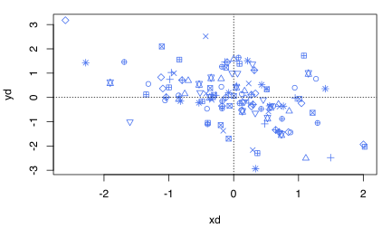
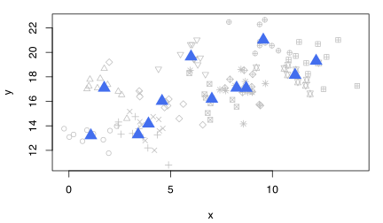

집단 간 회귀, 통합 회귀, 집단 내 회귀
- ‘표준적인’ 패널모형은 \(y_{it} = \alpha + \mathbf{x}_{it}\beta + \mu_i + \varepsilon_{it}\)로 표기됨
- 횡단면모형과의 차이는 오차항이 \(\mu_i\)와 \(\varepsilon_{it}\)의 합으로 구성된다고 보는 것
- 여기서 \(y_{i1}, \ldots, y_{iT}\)와 \(\mathbf{x}_{i1}, \ldots, \mathbf{x}_{iT}\)가 관측되고 \(\mu_i\)는 관측되지 않음
- \(\mu_i\)는 시불변 비관측 개체 특성(time-invariant unobserved individual effects)을 의미하며, 표준적인 패널모형에서는 이 \(\mu_i\)의 처리가 관건
- 일반적으로 \(\mu_i\)를 통제할 때 \(\mathbf{x}_{it}\) 변화가 \(y_{it}\)에 평균적으로 미치는 효과를 알고자 함
집단 간(between-group) 회귀
- 시간 차원을 무시하고 개체 간 비교만을 하는 회귀
- 우선 횡단면 데이터를 만들기 위해 \(\bar{\mathbf{x}}_i\)와 \(\bar{y}_i\)를 생성
- \(\bar{y}_i\)를 \(\bar{\mathbf{x}}_i\)에 대하여 OLS하는 것이 BE 회귀
- Stata에서는
xtreg ..., be명령 사용 - 해석 시에는 “어떤 성질을 갖는 개체(개인, 지역, 국가 등)가 이러저러한 성향을 보인다”고 함
-
다음 예는 국가를 패널자료(균형패널)를 사용(균형패널임을 어떻게 알 수 있는가?)
age65over 변수 결과 행을 해석하라.
i.year)이 포함되었는데 어떻게 되었는가? 왜 그런가?
-
다음은 불균형 패널자료를 사용한 결과이다. (불균형패널임을 어떻게 알 수 있는가?)
통합 회귀(pooled regression)
- 모든 자료를 통합하여(pool) OLS 회귀를 할 수 있음(pooled OLS, POLS)
- 이 경우 흔히 시간별 더미를 포함시켜 절편(전반적인 수준)이 연도마다 달라질 수 있도록 함
-
동일 개체 내에서 오차항(\(u_{it}\))에 시간에 걸친 상관이 존재할 수 있으므로 반드시 클러스터 표준오차를 사용
age65over 변수 관련 추정 결과를 해석하라.
집단 내(within-group, WG) 회귀
- WG 회귀는 “Fixed-effects (FE) 회귀”라고도 하며, 상이한 개체 간 수준 차이를 무시하고, 동일 개체 내에서 시간에 걸친 차이만을 고려하는 회귀 방법
-
구체적으로, 모형이 \(y_{it}=\alpha + \mathbf{x}_{it}\beta + \mu_i + \varepsilon_{it}\)일 때 다음과 같이 변환한다.
\[ y_{it}-\bar{y}_i = (\mathbf{x}_{it} - \bar{\mathbf{x}}_i)\beta + (\varepsilon_{it}-\bar{\varepsilon}_i) \] -
이 변환(WG 변환이라 함)으로 \(\mu_i\)를 소거하고 \(y_{it}-\bar{y}_i\)를 \(\mathbf{x}_{it}-\bar{\mathbf{x}}_i\)에 대하여 POLS하는 것이 바로 WG 회귀(FE 회귀)
- Stata에서 통상적으로 계산하는 표준오차는 \(\varepsilon_{it}\)가 \(i\)와 \(t\)에 걸쳐 \(iid\)라고 상정하고 구하는 것
-
만약 \(\varepsilon_{it}\)에 (이분산이나) 시계열상관이 존재한다면
vce(r)옵션을 사용하여 클러스터 표준오차를 사용해야 함.reg명령에서vce(r)옵션은 이분산에 견고한 표준오차를 계산하는 반면,xtreg명령에서vce(r)옵션은 클러스터 표준오차를 구함.
age65over 변수 관련 추정 결과를 해석하라.
vce(r)은 클러스터 표준오차를 구한다(xtreg 명령의 경우). 왜 클러스터 표준오차를 사용하겠는가?
클러스터 표준오차 사용 시 주의
- \(n\)이 작으면 클러스터 표준오차를 사용하기 어려움
- 실제로 적용하는 경우에는 \(n\)이 50 정도는 되어야
- \(n\)이 더 작은 경우에는 \(t\)통계량에 \(\sqrt{(n-1)/n}\)을 곱한 값을 \(t_{n-1}\) 분포의 임계값과 비교하는 방법을 사용할 수 있음(Hansen, 2007). 또는 부트스트랩
POLS, WG, BE 회귀의 비교
전체 데이터(POLS)

개체별로 표식 구분

개체별로 원점 주위로 평행이동(WG 변환)

개체별 평균(Between-group)

WG와 BE 차이의 예
- 종교와 보수성
- 나이와 보수성
- 가구당 월 소득과 소비
- 흡연 여부와 건강
- 용돈과 행복도
POLS 방법을 이용한 BE 추정값과 WG 추정값의 계산
- POLS만 이용하여 BE 추정과 FE 추정을 동시에 할 수도 있음
- 정확히는 FE 값과 BE−FE 값을 한 번에 계산
- 방법은 \(y_{it}\)를 \(\mathbf{x}_{it}\)와 \(\bar{\mathbf{x}}_i\)에 대하여 회귀하는 것
- \(\bar{\mathbf{x}}_i\)를 통제하면 \(\mathbf{x}_{it}\)가 변하기 위해서는 \(\mathbf{x}_{it}-\bar{\mathbf{x}}_i\)가 변해야 하므로, \(y_{it}\)를 \(\mathbf{x}_{it}\)와 \(\bar{\mathbf{x}}_i\)에 대하여 POLS 회귀하면 \(\mathbf{x}_{it}\)의 계수는 WG 추정계수가 됨
- \(\mathbf{x}_{it}\)가 통제된 상태에서 \(\bar{\mathbf{x}}_i\)가 증가하기 위해서는 \(\mathbf{x}_{it}-\bar{\mathbf{x}}_i\)가 동일한 정도로 감소해야 하므로 \(\bar{\mathbf{x}}_i\)의 계수는 BE 추정값 빼기 WG 추정값이 됨
-
이 모형을 correlated random effect (CRE) 모형이라 함
- 이렇게 \(\bar{\mathbf{x}}_i\)를 포함시켜서 회귀하는 것을 Mundlak device라 함
-
연도 더미에 대해서도 Mundlak device를 생성해야 하는데, 가장 편한 방법은 연도 더미변수들을 먼저 생성한 후 그 다음에 개체별 평균을 만드는 것
wdi5bal.dta)를 이용할 때, 이렇게 연도 더미변수들을 bar_yr2부터 bar_yr6까지 만들어 변수로 추가하여 CRE 모형 회귀를 하면 무슨 일이 일어나는가? 생성 후 data browser에서 변수값들을 눈으로 확인하고 그 이유를 설명하라.
-
(주의) 불균형 패널의 경우 한 변수라도 관측이 누락된 관측치는 drop시키고 시작해야 함
(중요) 도출된 시불변 변수들의 구조
| id | period | y | x | y_bar | x_bar | y_0 | x_1 | x_2 |
|---|---|---|---|---|---|---|---|---|
| 1 | 0 | y10 | x10 | (y10+y11+y12)/3 | (x10+x11+x12)/3 | y10 | x11 | x12 |
| 1 | 1 | y11 | x11 | (y10+y11+y12)/3 | (x10+x11+x12)/3 | y10 | x11 | x12 |
| 1 | 2 | y12 | x12 | (y10+y11+y12)/3 | (x10+x11+x12)/3 | y10 | x11 | x12 |
| 2 | 0 | y20 | x20 | (y20+y21+y22)/3 | (x20+x21+x22)/3 | y20 | x21 | x22 |
| 2 | 1 | y21 | x21 | (y20+y21+y22)/3 | (x20+x21+x22)/3 | y20 | x21 | x22 |
| 2 | 2 | y22 | x22 | (y20+y21+y22)/3 | (x20+x21+x22)/3 | y20 | x21 | x22 |